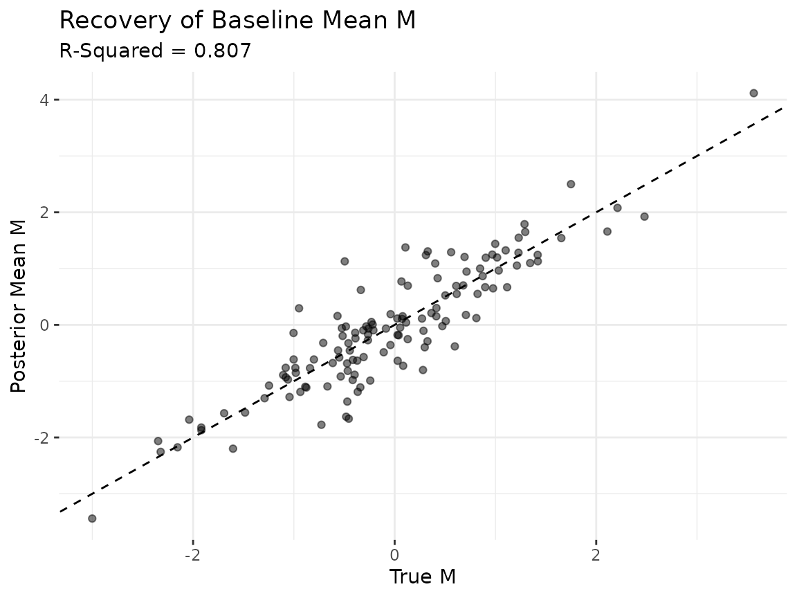
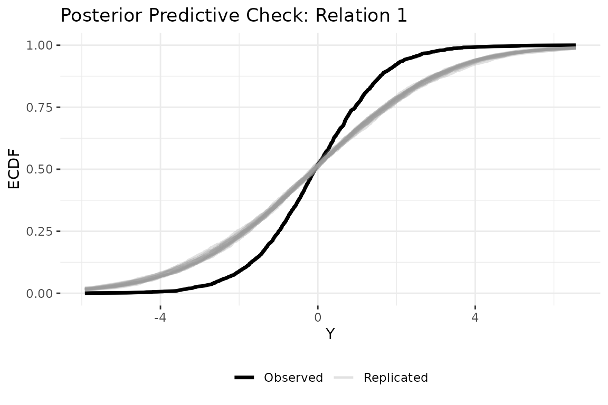

Getting started: static bilinear network model
Tosin Salau & Shahryar Minhas
2026-03-29
Source:vignettes/static_dbn.Rmd
static_dbn.Rmd1 Overview
Dynamic bilinear network (DBN) models estimate how past network
interactions predict future interactions. The package takes as input a
time series of networks stored as a 4D array with dimensions
[senders, receivers, relation_types, time_points], where
diagonal entries (self-ties) are set to NA.
The static model is the simplest variant. It estimates time-invariant sender and receiver influence matrices and that govern how the latent network state evolves:
The parameter captures sender influence: entry measures how strongly actor ’s past sending behavior predicts actor ’s current sending. captures the analogous pattern on the receiving side. absorbs persistent dyad-specific tendencies such as stable rivalries or alliances. Because and are constant across time, the rules governing network evolution do not change; only the network state itself moves.
2 Simulate data
We simulate a small network so we have known ground truth to compare
against. The simulation generates both ordinal data (sim$Y,
integers 1 through 5) and continuous latent values (sim$Z).
We use sim$Z here because the Gaussian family expects
continuous input.
sim = simulate_static_dbn(
n = 12, # 12 actors
p = 1, # 1 relation type
time = 15, # 15 time periods
sigma2 = 0.5, # process noise variance
tau2 = 0.1, # prior variance for A and B
seed = 6886
)
Y = sim$Z
dim(Y)
#> [1] 12 12 1 15The output confirms the expected [12, 12, 1, 15] array
structure. The simulation also returns the true
,
,
,
and
matrices, which we use below to verify that the model recovers the
data-generating process.
3 Fit the model
We pass the data array to dbn() and specify the model
type and outcome family. Three MCMC settings control sampling:
nscan sets the number of posterior samples to draw after
burn-in, burn sets the warm-up period to discard, and
odens thins the chain by saving every
-th
sample to reduce autocorrelation.
fit = dbn(
Y,
model = "static",
family = "gaussian",
nscan = 1000,
burn = 500,
odens = 2,
verbose = FALSE
)4 Convergence diagnostics
MCMC methods produce samples from the posterior distribution, but those samples are only useful if the chain has converged, meaning it has found and is exploring the right region of parameter space. Well-behaved trace plots show stationary fluctuation around a stable mean. Drift, the chain getting stuck, or slow oscillation are all signs that the chain needs to run longer.
check_convergence(fit)
#> s2 t2 g2
#> 500.0000 500.0000 191.0568
#>
#> Fraction in 1st window = 0.1
#> Fraction in 2nd window = 0.5
#>
#> s2 t2 g2
#> -0.3418 -2.5044 -0.8818
plot_trace(fit)
The diagnostics report effective sample size (ESS) and Geweke
statistics. ESS values of at least a few hundred indicate adequate
mixing. The three parameters shown are
(process variance),
(A/B prior variance), and
(latent variance). If any trace shows trending or poor mixing, increase
both burn and nscan before proceeding.
5 Parameter recovery
A key advantage of simulation studies is that we can check whether the model recovers the known truth. The scalar variance parameters can differ in scale between the simulation and the model’s internal parameterization, so the most informative check is whether the model recovers the latent baseline structure .
Scalar parameters
param_summary(fit)
#> parameter mean sd q2.5 q50 q97.5
#> 1 s2 1.05365418 0.03099135 0.98926137 1.05537207 1.11870438
#> 2 t2 0.04948152 0.01520899 0.02792947 0.04645109 0.08586179
#> 3 g2 1.24575551 0.14125450 1.02045664 1.22719169 1.54715358Baseline mean M
The posterior mean of
should correlate with the true
from the simulation. We exclude diagonal entries (self-ties are
NA by construction) and compare all off-diagonal
elements.
M_est = latent_summary(fit, fun = mean)
# exclude diagonal entries from both truth and estimate
n_act = 12
off_diag = which(M_est$i != M_est$j)
est_M_vec = M_est$value[off_diag]
true_M_mat = sim$M[, , 1]
diag(true_M_mat) = NA
true_M_vec = as.vector(true_M_mat)
true_M_vec = true_M_vec[!is.na(true_M_vec)]
df_M = data.frame(truth = true_M_vec, estimate = est_M_vec)
r_sq = round(cor(df_M$truth, df_M$estimate)^2, 3)
ggplot(df_M, aes(x = truth, y = estimate)) +
geom_abline(slope = 1, intercept = 0, linetype = "dashed") +
geom_point(alpha = 0.5) +
labs(
title = "Recovery of Baseline Mean M",
subtitle = paste0("R-Squared = ", r_sq),
x = "True M", y = "Posterior Mean M"
) +
theme_bw() +
theme(panel.border = element_blank())
Points clustering along the 45-degree line indicate that the model is recovering the true baseline relational tendencies. An above 0.8 suggests the posterior mean of captures most of the cross-sectional structure in the data-generating process.
6 Model summary
The summary() method reports posterior means and
credible intervals for the scalar parameters, along with data
dimensions, MCMC settings, and the outcome family.
summary(fit)7 Posterior predictive check
A posterior predictive check asks whether data simulated from the fitted model look like the observed data. We generate replicated datasets from the posterior, then compare their empirical CDF to the observed data. Replicated curves that closely track the observed curve indicate the model captures the data’s distributional features.
ppd = posterior_predict_dbn(fit, ndraws = 20, seed = 6886)
plot_ppc_ecdf(fit, ppd, Y_obs = Y, rel = 1)
8 Other outcome families
The static model supports two additional families beyond Gaussian. The ordinal family uses a rank likelihood that respects the ordering of categorical data (event counts, Likert items) without assuming a specific scale. The binary family uses a probit link for 0/1 tie data.
# ordinal: for ranked data (e.g., event counts, Likert items)
fit_ord = dbn(sim$Y, model = "static", family = "ordinal",
nscan = 1000, burn = 500, odens = 2, verbose = FALSE)
summary(fit_ord)
# binary: for 0/1 tie presence/absence
Y_binary = array(as.integer(sim$Y[, , , ] > 3), dim = dim(sim$Y))
for (t in seq_len(dim(Y_binary)[4])) diag(Y_binary[, , 1, t]) = NA
fit_bin = dbn(Y_binary, model = "static", family = "binary",
nscan = 1000, burn = 500, odens = 2, verbose = FALSE)
summary(fit_bin)9 Next steps
The static model assumes the influence structure is constant. For
applications where those rules may change, the dynamic model allows
and
to evolve over time (see vignette("dynamic_dbn")). When
discrete structural breaks are known in advance, the piecewise model
estimates separate influence matrices for each regime (see
vignette("piecewise_dbn")). For the full mathematical
framework, see vignette("methodology").